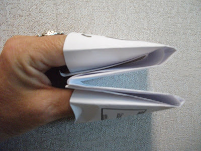
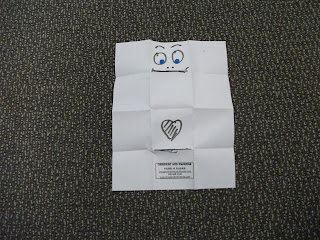
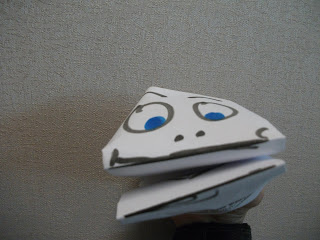

Quick, Easy, and Useful!
9/5/2010
{kind=link}

I love this paper puppet idea that was sent by Barb Phoenix. An idea for your Labor Day Holiday no labor at all! It just takes a few seconds to fold one sheet of paper into a very fun and effective hand puppet. Barb says she uses them after a show when kids come up and want to play with her puppets. "How would you like to have one of your own?", she asks. Then she shows them how to make the folds and draw on a face.
This would make a fun craft project, spur of the moment puppet (I'm guessing you could use a restaraunt paper napkin), restless child anticdote, etc.
{kind=link}

Barb has her ad printed on some and uses as an inexpensive handout. She is thinking of printing it on the back of a coloring sheet of her puppets, Oregano and Chesterton, so after coloring the picture, the child can fold it into a puppet with her information on the bottom.
I was able to fold one easily by looking at these pictures. Make the two lengthwise folds first.
If you fold the top corners of the finished puppet down, and the bottom corners up, you get teeth.
Thank you, Barb.
